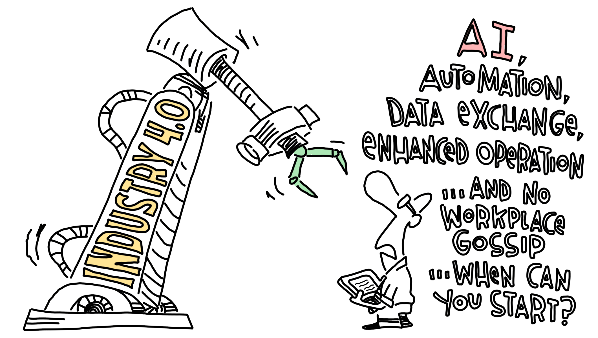

Optimierungen
Das Bessere ist der Feind des Guten.
– Voltaire

Kein Projekt ist je abgeschlossen – jede Lösung ist nur der aktuelle Stand eines längeren Weges.
Optimierungen sind das unscheinbare Rückgrat technischer Entwicklung. Sie sind oft weniger spektakulär als ein kompletter Neubau, aber in ihrer Wirkung nicht minder bedeutsam. Denn kaum ein Produkt oder Bauteil ist von Anfang an perfekt – erst durch viele kleine Anpassungen, Korrekturen und Verfeinerungen entsteht langfristig ein System, das zuverlässig, effizient und langlebig ist.
Was Optimierungen so wertvoll macht, ist ihre Nähe zur Praxis. Sie entstehen dort, wo ein Detail im Alltag auffällt: ein Geräusch, eine ungenaue Passung, ein unnötig komplizierter Handgriff. Diese scheinbar kleinen Punkte sind es, die den Unterschied zwischen einer funktionierenden und einer wirklich guten Lösung ausmachen.
Ein Beispiel dafür ist die Entwicklung meiner Pflanztöpfe. In der ersten Version mussten die Standfüße noch mit Schrauben fixiert werden – funktional, aber umständlich. Heute besitzen die Füße ein integriertes Gewinde und lassen sich einfach eindrehen. Das Resultat: stabiler, eleganter und deutlich anwenderfreundlicher. Ein anderes Beispiel ist die Reparatur eines Autotürschlosses: Statt das ganze Schloss zu ersetzen, genügte ein kleines 3D-gedrucktes Teil, um eine konstruktive Schwäche auszugleichen und das Bauteil langfristig haltbar zu machen.
Solche Verbesserungen zeigen: Optimierung ist kein Mangel an ursprünglicher Qualität, sondern ein normaler und notwendiger Bestandteil jeder technischen Arbeit. Sie bedeutet, vorhandene Lösungen kritisch zu hinterfragen, neu zu denken und sie dadurch zukunftsfähiger zu machen. Und sie vermittelt ein wichtiges Prinzip: dass Fortschritt kein Sprung ist, sondern das Ergebnis vieler kleiner Schritte.
Für mich liegt genau darin der Reiz. Nicht die spektakuläre Neuerfindung, sondern die stille Verfeinerung – der Prozess, aus Gutem etwas Besseres zu machen. Optimierungen sind deshalb weit mehr als Detailarbeit. Sie sind Ausdruck von Verantwortungsbewusstsein, technischem Anspruch und dem Willen, nie beim Status quo stehen zu bleiben.